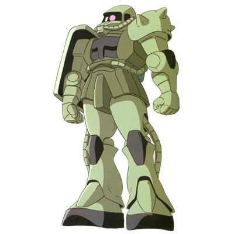

| MS-06C Zaku II Lourm Campaign General Purpose Zeon Duchy Mobile Suit |
|
|  | |
General and Technical Data |
|
|
Model number: MS-06C Code name: Zaku II Unit type: mass production general purpose mobile suit Operator: Zeon Duchy Dimensions: head height 17.5 meters Weight: empty 60.1 metric tons; max gross 75.3 metric tons Construction: super-high tensile steel on monocoque frame Powerplant: Minovsky type ultracompact fusion reactor, output rated at 951 kW Propulsion: rocket thrusters: 2 x 20500 kg, 2 x 1000 kg Performance: maximum thruster acceleration 0.58 G; 180-degree turn time 1.8 seconds; maximum ground running speed 84 km/h Equipment and design features: sensors, range 3200 meters; Anti Radiation armor coating Fixed armaments: none Optional hand armaments: 120mm machinegun, drum-fed, 100 rounds per drum; 280mm Zaku bazooka, 4 round magazine; heat hawk, battery powered; 3x grenade Magnetic Storage Racks: 5, primary rack on backpack, one secondary rack on either hip. 2 ammunition racks on front hips. Legs can additionally mount 3-tube missile launchers or panzer fausts. |
|
| Technical and Historical Notes | |
|
Following the failure of the improved (but still inadequate) MS-06A Zaku II, Zeonic Company went back to the drawing board, improving their new Zaku model even more and produced the MS-06C Zaku II Early Production Type (or "C-type"). Among the differences between this model and other Zakus was a heavy amount of anti NCB radiation armor plating, as the mobile suit was designed with nuclear warfare as a primary goal.
Rolled out in January UC 0078, the C-type was approved and became Zeon's mainstay mobile suit, serving for at least a full year through the early stages of the One Year War. The standard paintjob on the C-type was a combination of different greens and black, though a few ace pilots would paint their units in custom colors, such as the distinctive red of "Red Comet" Char Aznable and the black-and-purple of the Black Tri-Stars team of Gaia, Mash and Ortega, all of whom distinguished themselves during the Loum Campaign early in the One Year War. By February UC 0079, the C-type was upgraded into the new MS-06F, or "F-type," and would continue to be Zeon's standard frontline unit through the end of the war.
Following the Lourm campaign more than 700 C type Zaku II's would be stripped of their NCB armor and refashioned into F type, J type or S type models. However, a significant portion were sold on the black market to pay for this massive undertaking, the majority making it into the hands of the JDEG. As such, this mobile suit, still with its NCB armor but without its nuclear armament, has made it into the hands of many common criminals.
|
 RPG quick stats sheet
RPG quick stats sheet | Weapons and Features | |


 

Zaku II Cockpit |
|